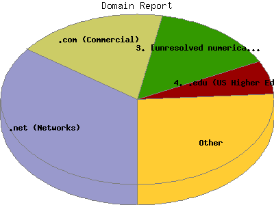

Report generated by Analog 5.91beta1 and Report Magic 2.21
|
Web Server Statistics for "Harish Narayanan (hnarayan) - August 2004" Report generated by Analog 5.91beta1 and Report Magic 2.21 |
The Domain Report identifies the top origins of visitors to this site. This is determined by the suffix of their domain name. Use this information carefully as this is based on where their domain name is registered and may not always be an accurate identifier of the actual geographic location of this visitor. For example, while most .com domain names are from the United States, there are a growing number of .com domain names that exist outside the United States.
This report shows all results. This report is sorted by number of requests.

| Domain Name | Number of requests | Number of bytes transferred | Percentage of the bytes | Percentage of the requests | |
|---|---|---|---|---|---|
| 1. | .net (Networks) | 2,353 | 34.010 MB | 23.60% | 35.05% |
| 2. | .com (Commercial) | 1,203 | 29.361 MB | 20.37% | 17.92% |
| aol.com (America Online) | 36 | 1.541 MB | 1.07% | 0.54% | |
| 3. | [unresolved numerical addresses] | 986 | 51.193 MB | 35.52% | 14.69% |
| 4. | .edu (US Higher Education) | 433 | 4.989 MB | 3.46% | 6.45% |
| umich.edu | 236 | 3.419 MB | 2.37% | 3.52% | |
| engin.umich.edu | 205 | 2.881 MB | 2.00% | 3.05% | |
| 5. | .ca (Canada) | 168 | 4.315 MB | 2.99% | 2.50% |
| 6. | .uk (United Kingdom) | 117 | 1.671 MB | 1.16% | 1.74% |
| 7. | .be (Belgium) | 110 | 1.709 MB | 1.19% | 1.64% |
| 8. | .nl (Netherlands) | 97 | 2.137 MB | 1.48% | 1.45% |
| 9. | .fi (Finland) | 91 | 920.138 KB | 0.62% | 1.36% |
| 10. | .jp (Japan) | 89 | 1.374 MB | 0.95% | 1.33% |
| 11. | .org (Non Profit Making Organizations) | 82 | 899.478 KB | 0.61% | 1.22% |
| 12. | .dk (Denmark) | 82 | 651.508 KB | 0.44% | 1.22% |
| 13. | .de (Germany) | 80 | 859.309 KB | 0.58% | 1.19% |
| 14. | .au (Australia) | 72 | 640.027 KB | 0.43% | 1.07% |
| 15. | .ch (Switzerland) | 67 | 852.706 KB | 0.58% | 1.00% |
| 16. | .fr (France) | 66 | 417.476 KB | 0.28% | 0.98% |
| 17. | .se (Sweden) | 63 | 706.478 KB | 0.48% | 0.94% |
| 18. | .it (Italy) | 59 | 414.334 KB | 0.28% | 0.88% |
| 19. | .pl (Poland) | 48 | 763.036 KB | 0.52% | 0.71% |
| 20. | .il (Israel) | 46 | 412.062 KB | 0.28% | 0.69% |
| 21. | .br (Brazil) | 42 | 674.634 KB | 0.46% | 0.63% |
| 22. | .nz (New Zealand) | 42 | 335.064 KB | 0.23% | 0.63% |
| 23. | .gr (Greece) | 35 | 264.639 KB | 0.18% | 0.52% |
| 24. | .in (India) | 30 | 303.489 KB | 0.21% | 0.45% |
| 25. | .mx (Mexico) | 28 | 912.611 KB | 0.62% | 0.42% |
| 26. | .cl (Chile) | 23 | 788.936 KB | 0.54% | 0.34% |
| 27. | .at (Austria) | 22 | 109.226 KB | 0.07% | 0.33% |
| 28. | .gov (US Government) | 19 | 110.410 KB | 0.07% | 0.28% |
| 29. | .no (Norway) | 18 | 510.255 KB | 0.35% | 0.27% |
| 30. | .us (United States) | 17 | 87.715 KB | 0.06% | 0.25% |
| 31. | .sg (Singapore) | 17 | 105.975 KB | 0.07% | 0.25% |
| 32. | .bg (Bulgaria) | 11 | 198.538 KB | 0.14% | 0.16% |
| 33. | .lt (Lithuania) | 11 | 91.319 KB | 0.06% | 0.16% |
| 34. | .cy (Cyprus) | 11 | 69.385 KB | 0.05% | 0.16% |
| 35. | .mil (US Military) | 8 | 42.315 KB | 0.03% | 0.12% |
| 36. | .si (Slovenia) | 8 | 34.809 KB | 0.02% | 0.12% |
| 37. | .hk (Hong Kong) | 7 | 35.964 KB | 0.02% | 0.10% |
| 38. | .ro (Romania) | 7 | 107.155 KB | 0.07% | 0.10% |
| 39. | .ru (Russia) | 7 | 640.505 KB | 0.43% | 0.10% |
| 40. | .my (Malaysia) | 6 | 44.035 KB | 0.03% | 0.09% |
| 41. | .es (Spain) | 6 | 51.447 KB | 0.04% | 0.09% |
| 42. | .cz (Czech Republic) | 6 | 28.184 KB | 0.02% | 0.09% |
| 43. | .sa (Saudi Arabia) | 5 | 475.316 KB | 0.32% | 0.07% |
| 44. | .tw (Taiwan) | 4 | 59.825 KB | 0.04% | 0.06% |
| 45. | .int (International Treaty Organizations) | 3 | 23.653 KB | 0.02% | 0.04% |
| 46. | .hu (Hungary) | 3 | 23.679 KB | 0.02% | 0.04% |
| 47. | .tr (Turkey) | 3 | 7.809 KB | 0.01% | 0.04% |
| 48. | .arpa (Arpanet) | 2 | 5.045 KB | 0.00% | 0.03% |
This report was generated on November 16, 2004 13:58.
Report time frame August 1, 2004 00:05 to August 31, 2004 23:36.
| Web statistics report produced by: | |
 Analog 5.91beta1 Analog 5.91beta1 |  Report Magic 2.21 Report Magic 2.21 |